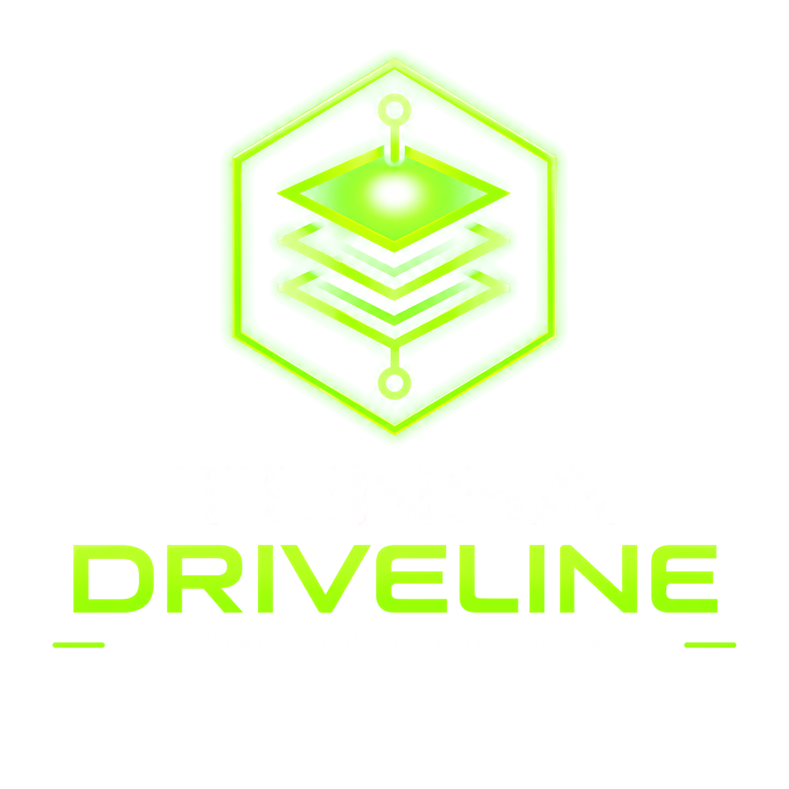

Argus Ventures
Argus Ventures focuses on discovery, existing-project assessment, requirements, architecture, and preparing software plans for approval.

AI-assisted software engineering · In active development
From a clear plan to reviewed, verifiable software.
An evolving AI-assisted software engineering system.

Writing code is only part of building software. Before implementation begins, someone has to understand the problem, determine what needs to be built, resolve architectural questions, and define what a successful result should look like.
For a new application, that process starts with an idea or a need. It involves exploring the requirements, understanding the intended users, evaluating possible approaches, and determining what should be included in the first useful version.
For an existing application, the starting point is different. The software may be unfinished, difficult to maintain, poorly documented, or behaving in ways its developers no longer understand. Before making changes, someone needs to establish what actually exists, identify the problems, and determine a practical path forward.
Both situations require careful discovery and planning before development can proceed with confidence.
Once implementation begins, a different set of responsibilities takes over. Changes need to stay within scope. Tests need to mean something. Defects need to be identified and corrected. Completed work needs to be reviewed before it becomes part of the product.
AI coding agents can accelerate implementation, but they do not eliminate those responsibilities.
TENSA Driveline is being developed to connect these stages into one controlled engineering process.
Two complementary systems provide the foundation for that work.
Argus Ventures focuses on discovery, existing-project assessment, requirements, architecture, and preparing software plans for approval.
Agent Operations focuses on executing approved engineering work through supervised AI coding agents, validation, independent review, and human acceptance.
These systems were developed separately to solve different problems. Their origins and the reasons for bringing them together are explained later on this page.
The long-term goal is a software development system that can move approved work through implementation, testing, independent review, and acceptance while preserving the evidence behind each decision.
The underlying systems are under active development. A working manual engineering foundation exists, while the broader integrated and managed-worker capabilities remain in progress.
TENSA's software projects began with a problem that will be familiar to anyone who has tried building something substantial with AI: ideas and planning can move much faster than implementation.
An AI assistant can help explore architectures, design features, compare approaches, and produce plans for systems that would ordinarily require a development team. But those plans eventually have to become working software.
That transition became a bottleneck.
As NeuroCore, Argus ACLI, and Argus Lab grew, the amount of planned engineering work increased. Coding agents made implementation more accessible, but using them still required substantial human involvement. Each task needed context, instructions, permissions, testing, inspection, and decisions about what happened next.
Simply adding more coding agents would not solve the underlying problem.
A collection of agents can generate more code without necessarily producing more dependable software. If their work is poorly scoped, difficult to verify, or disconnected from the approved architecture, additional output can create additional problems.
Driveline approaches software development as a connected engineering process rather than a series of coding prompts.
The objective is not to maximize how much code an AI can produce. It is to increase how much useful, verified engineering work can be completed with a manageable amount of human supervision.
TENSA Driveline
Discovery paths · conceptual process
A software project can go wrong long before anyone begins writing it.
A customer might describe a feature without understanding its dependencies. An existing application might appear broken when the real problem is its configuration or environment. A new product idea might be technically possible but far too broad for a useful first release.
These are discovery and planning problems, not coding problems.
The first part of Driveline's intended workflow draws on the assessment and project-planning methods developed through Argus Ventures.
For an existing project, that means understanding the codebase, its architecture, dependencies, documentation, and available evidence before recommending changes. The investigation should distinguish confirmed defects from assumptions and identify what can actually be verified.
For a new project, the process starts with understanding the intended users, problems, requirements, and larger product vision. From there, it narrows the initial work into an achievable, testable version.
The larger vision does not disappear. It becomes a roadmap rather than an excuse to build everything at once.
The result should be a plan that an engineer—or a properly supervised coding agent—can act on without having to make major product decisions independently.
That plan needs clear requirements, technical boundaries, dependencies, and acceptance criteria.
A good implementation process cannot compensate for a project that was never adequately defined.
Once a project has an approved implementation plan, the next challenge is execution.
This is the role being developed through Agent Operations, TENSA's supervised engineering-execution system.
For the technical findings behind this execution approach, explore the Agent Operations engineering article series, beginning with the article on enforced coding-agent boundaries.
Rather than handing an AI model a large instruction such as "build this application," the process divides implementation into bounded tasks with explicit responsibilities.
Each task identifies what is authorized, where work may occur, what changes are permitted, and how the result will be checked.
A coding worker can then operate within that assignment using an approved tool such as Claude Code or Codex.
The important distinction is that the coding agent is performing engineering work within an established process. It is not independently deciding the project's direction, expanding its own permissions, or declaring its output acceptable.
The current manual Agent Operations workflow already includes structured task packets, workspace checks, controlled validation commands, artifact inventories, and review procedures.
These capabilities provide a foundation for the managed execution system now being developed.
Driveline's intended end-to-end process follows five connected stages:
Understand the problem, the existing software when applicable, and the evidence needed to make informed decisions.
Define requirements, architecture, an achievable implementation scope, and measurable acceptance criteria. Preserve the approved plan as the basis for execution.
Translate approved work into bounded engineering tasks and use appropriately authorized coding workers to make changes.
Run the required checks, inspect the resulting changes and evidence, identify defects, and perform authorized corrections when necessary.
Present the verified result and remaining limitations for human approval. Integration, publication, deployment, or customer delivery are separately controlled decisions.
The stages are designed to work together, but the full Driveline pipeline is not yet operating as an integrated automated service.
One of the most important lessons from developing Agent Operations has been that successfully executing a task does not necessarily mean the resulting software is correct.
During controlled coding experiments, AI workers produced implementations that passed their available tests but still contained defects discovered during subsequent review.
In one experiment, two different coding systems were given comparable assignments. Both produced code that passed substantial test suites, yet neither implementation was accepted because review identified unresolved problems.
That experience helped shape the engineering approach.
Driveline is being developed around a distinction between producing an implementation and establishing enough evidence to accept it.
The process needs to know which files changed, what validation actually ran, whether a test passed, what an independent reviewer found, and whether corrections were completed within their authorized scope.
The worker's own description of its success is not a substitute for that evidence.
Independent technical review is especially important. A fresh reviewer can examine the resulting code and supporting information without relying on the implementation agent's explanation of what it believes it accomplished.
When a significant defect is found, the result should return to a bounded repair step, followed by the appropriate validation and review again.
This does not guarantee defect-free software. It creates a process in which uncertainty, failures, and unresolved findings are visible rather than being hidden behind a successful-looking agent response.
TENSA Driveline
Authority model · planned supervisor capabilities are not yet qualified
Validation and independent review inform a separate human acceptance decision. The managed enforcement path remains under development.
A coding model may be capable of editing files, executing commands, installing dependencies, or interacting with a repository. That technical capability does not automatically mean every action should be permitted.
Driveline's engineering approach separates the work assigned to a model from the authority to approve that work.
Project scope, significant architectural decisions, permissions, acceptance, and publication remain under human control.
The developing Agent Operations supervisor is intended to enforce previously approved decisions through deterministic software, rather than relying entirely on natural-language instructions.
This includes preparing bounded execution environments, controlling task admission, recording actual tool behavior, and stopping when a worker encounters a decision outside its authority.
It also means recognizing the limits of AI tool permissions.
A model being instructed not to access something is not equivalent to an operating-system or network boundary preventing that access.
TENSA has begun developing isolated worker infrastructure for future execution involving unfamiliar code. That work includes dedicated virtualized environments and network restrictions, but full worker-to-worker isolation and the complete client-code execution path have not yet been qualified.
Those distinctions matter because a trustworthy engineering process must describe the controls it has actually demonstrated—not merely the controls it intends to provide.
Driveline brings together work that has been progressing through two separate development efforts.
The discovery and planning side has established methods for repository assessment, current-state reconstruction, findings reports, recovery planning, requirements, and new-project scoping.
These methods have been exercised through internal and public-repository proving work. Their commercial application remains subject to additional validation and client-readiness requirements.
The engineering execution side has a functioning manually supervised workflow.
Agent Operations can validate task definitions, check authorized workspace changes, execute specified validation commands, inventory modified and generated artifacts, preserve launch information, and support independent review and bounded correction.
Several of these components have been implemented, tested, independently reviewed, corrected, and accepted through the project's own development process.
The next major step is reducing the amount of manual supervision required between those operations.
The managed-worker upgrade has completed its initial architecture and planning milestone. More recent experiments have tested actual headless behavior and permission handling across Claude Code, Codex, and Grok, including a bounded coding change examined by an independent reviewer using a different provider.
These experiments provide useful evidence about how the tools behave. They do not yet establish a completed autonomous supervisor, unrestricted worker execution, or reliable automatic recovery.
At the current stage, the manual engineering process is usable; the managed execution and unified discovery-to-delivery system are still being developed.
TENSA Driveline
Long-term architecture · not an operating integrated service
The longer-term direction extends beyond launching one coding agent against one task.
A coordinated engineering system needs to manage many approved tasks without losing track of dependencies, resource limits, reviews, or project boundaries.
Driveline's planned capabilities include a supervisor that can coordinate approved coding workers, maintain separate project queues, track execution state, preserve evidence across interruptions, and manage review and authorized repair steps.
The architecture is intended to support multiple projects and workers as actual performance and isolation requirements are demonstrated.
A planned control interface would make that work visible: which tasks are ready, which are running, which are blocked, what evidence has been collected, and which decisions require human attention.
Local AI models are also being evaluated as possible workers within the same system. The intention is to use appropriate models for particular engineering tasks without creating separate execution systems or weakening the shared validation and approval requirements.
These are staged development goals, not capabilities being advertised as currently available.
The next improvements must earn their place by reducing real operator effort or improving accepted engineering output. Adding automation that creates more maintenance and supervision than it eliminates would defeat the purpose.
The software-building ambition predates Driveline and Agent Operations.
Early NeuroCore planning already included the idea of an AI assistant capable of understanding software projects and helping build them. That vision developed into a more detailed Builder Mode concept involving repository awareness, controlled changes, validation, and human authorization.
But NeuroCore itself was a substantial development undertaking.
Waiting for the entire platform to mature before using those ideas to accelerate other projects created a practical problem: the tool intended to help build the platform could not yet be built inside it.
Agent Operations was therefore developed independently as a working engineering system that could be tested and improved without requiring NeuroCore to be complete first.
Argus Ventures followed a complementary direction, building the assessment, planning, and commercial processes that can prepare work for implementation.
TENSA Driveline is the public identity for bringing those responsibilities together.
It belongs within the TENSA Engineering ecosystem alongside NeuroCore, Argus ACLI, and Argus Lab, but it has its own development history and current responsibilities.
The long-term architectural direction allows proven, reusable software-engineering capabilities to become part of NeuroCore through separately reviewed integration work. That integration has not yet been implemented, and the final division of responsibilities remains to be determined.
TENSA Driveline is being developed around a practical idea: the effort required to supervise AI-assisted software development should not grow uncontrollably as the amount of generated code increases.
Good engineering still requires planning, defined responsibilities, testing, independent judgment, and a clear understanding of what has actually been accomplished.
AI can help perform more of that work. The surrounding system has to make it dependable.
Driveline's purpose is to connect those responsibilities so that approved software projects can move forward with clearer boundaries, better evidence, and less repetitive manual coordination.
The goal is not to remove the engineer from software development. It is to give the engineer a more capable, controlled way to get the work done.